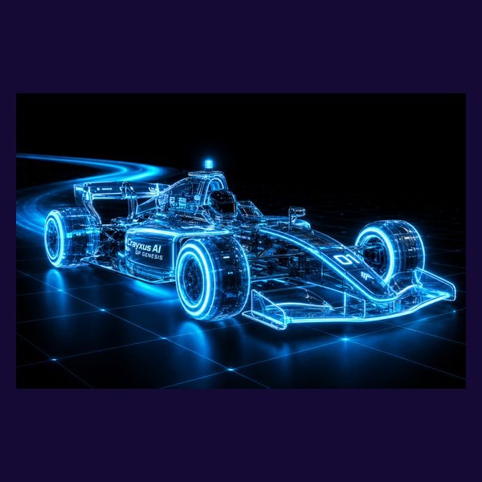

CRAYXUS AI·GP | ONE-HOUR PANORAMA
一年,亲手造出
击败人类的 AI 赛车
从 0 基础到人机对决——四个阶段的完整技术之旅
🎓 浙江大学 AI 教授团队 学术指导
🏭 中天模型 赛事 · 整车支持
TODAY
上次,你们看到车会自己跑
今天回答三个问题——
- 它是怎么被造出来的?(完整技术流程)
- 孩子在每个阶段,亲手学到什么?
- 一年结束,手里留下什么?(成果与履历)

AI 驾驶座舱视角——这一年,孩子坐进"工程师席"
THE ROADMAP
一年,四个台阶
每周 2 小时 · 全年约 40 周 · 课上完成,不留作业
T1 · 第 1–3 月
让车动
看懂 AI 自动驾驶,亲手调出车的"眼睛"
T2 · 第 4–6 月
训模型
用自己采的数据,训练第一个开车的 AI
T3 · 第 7–9 月
攻单圈
强化学习 + 最优赛车线,圈速逼近人类
T4 · 第 10–12 月
击败人类
人机对决 + 赛事证书 + 教授推荐信
HOW IT WORKS
自动驾驶 = 眼睛 + 大脑
- 📷 眼睛:车头摄像头,看见赛道边线
- 🧠 大脑:神经网络,看到画面就知道怎么开
- 🕹️ 手脚:转向 + 油门,毫秒级执行
和 Tesla / Waymo 同一条技术路线——做成孩子能亲手掌握的 1/10 版。

CRAYXUS 软件大脑 × 精密硬件赛车
TWO THREADS
两条主线,贯穿一整年
🛠️ VIBE CODING 主线
不背语法,指挥 AI 写代码
全程用提示词 + AI 编程把想法变成能跑的车代码——0 基础也能造复杂系统,这也是未来十年最值钱的元技能。
🏆 成果 / 证书主线
边学边拿,越往后越硬
每阶段发阶梯认证;后程对接白名单赛事证书 + 浙大教授推荐信 + 科研实践证明——逐阶段兑现。
ENGINEERING
全程零遥控器——工程师的方式
- 操控全走 PC 控制台:启停、调参、部署、急停,全在屏幕上
- 软件一键急停 + 车端看门狗:失联自动刹停
- 这不是玩遥控车——是按真实自动驾驶工程的方式训练孩子

车端安全中枢:实时遥测 + 参数调校 + 失联自动刹停
TWO CARS
两台赛车,各司其职
🚗 训练车 · T1–T2
室内 AI 赛车
耐操、安全,适合大量试错与采数据。归孩子所有,结业带走——一年的"座驾"和作品载体。
🏎️ 竞速车 · T3–T4
竞速版赛车
高速、室外、厘米级定位。与中天正式赛事同款车型——人机对决时,AI 和人类开的是同一种车,赢了无可争议。
T1 · 第 1–3 月 · ①
看懂 AI · 让车动
- 学:自动驾驶全貌——感知 → 决策 → 控制,每个环节拆开看懂
- 学:视觉感知入门——车是怎么"看见"赛道的
- 学:提示词基础 + vibe coding——写出第一个能跑的控制脚本
T1 · 第 1–3 月 · ②
每周 2 小时,长这样
→
🖐
80′ 动手
调参 / 写脚本 / 上赛道
全部课上完成
📓
25′ 复盘
记科研日志:
做了什么 · 为什么 · 下次怎么改
不留作业——学业重的孩子也跟得上;科研日志全年累积,期末就是研究报告的底稿。
T1 · 第 1–3 月 · ③
"感知"拆给你看
🖐 现场试一下:你来调 AI 的眼睛(拖滑块,框准蓝边)
T1 · MILESTONE
三个月后:车的眼睛
是他自己调出来的
🎯 里程碑:车在室内自主跑一圈 + 遇障自动停 · 📜 L1–L2 阶梯认证
不是拼装玩具——每个参数他都知道为什么。这是工程,不是组装。
T2 · 第 4–6 月 · ①
教车开 · 训练自己的模型
- 跨一大步:从"写规则"到"用例子教 AI"——这就是机器学习
- 学:模仿学习——你开车做示范,录下的数据就是 AI 的教材
- 学:神经网络、训练过程、数据质量——为什么"教材"好坏决定 AI 水平
T2 · 第 4–6 月 · ②
完整的 AI 闭环,他一个人跑通
🕹️
① 开车示范
PC 控制台开几圈
录下「画面 → 方向」
📉
③ 一键训练
loss 曲线下降
= AI 在变聪明
这四步,就是 Tesla 训练自动驾驶的同一套流程——孩子在 1/10 世界里完整拥有它。
T2 · 第 4–6 月 · ③
loss 曲线:AI 变聪明的心电图
- 曲线往下掉 = AI 从例子里总结出了开车规律
- 掉不动了?孩子要学会诊断:数据不够?教得太乱?练过头了?
- 这就是真实 AI 工程师每天看的图——读懂它,比会背公式值钱
🖐 现场试一下:采数据 → 一键训练 → 看它学会你的开法
T2 · MILESTONE
「我训练的模型,让车自动跑」
🎯 里程碑:自己的模型上车跑 + 装起跑线计时门,拿到首个官方单圈成绩 · 📜 L3 神经网络训练认证
从 T2 起,每圈都有计时——进步是一条看得见的圈速曲线,家长每个月都能看到孩子快了几秒。
T3 · 第 7–9 月 · ①
模仿有天花板:
学我,最多和我一样快
- 模仿学习的极限 = 示范者的水平——想超越人类,AI 必须自己练
- 学:强化学习——设好奖励(不出界 + 更快),AI 在仿真里自己试错进化
- 孩子的角色升级:从"司机教练"变成"规则设计师"
T3 · 第 7–9 月 · ②
最优赛车线:和 F1 车手同一门学问
- 同一个弯,走法不同,出弯速度差 20%——外-内-外、晚刹早给油
- AI 用数学算出最小曲率路线,毫米不差地执行,圈圈一致
- 人类车手练十年的"线",AI 一个下午算出来——这就是它敢挑战人类的底气

同一条赛道,四种算法各自算出的赛车线——孩子会亲手比较它们谁更快
T3 · 第 7–9 月 · ③
仿真一万圈,真车来验证
- 🖥️ 仿真自学:虚拟赛道日夜试错,一晚 = 一万圈
- 🔧 sim2real 校准:仿真和现实的差距,用真车数据补上
- 🏁 真车刷圈:每周上赛道验证,受控实验 + 记录
👀 看一下:AI 在仿真里一轮比一轮快

数字孪生:左边是仿真,右边是真赛道——SIM ↔ REAL
T3 · MILESTONE
装备升级,圈速逼近人类
- 升级竞速版赛车:更快的车 + 室外赛道 + 厘米级 RTK 定位
- 每周做受控实验:改一个变量 → 跑 → 记录 → 分析——真·科研方法
🎯 里程碑:圈速曲线持续下降,逼近人类基准 · 📜 进阶认证 + 白名单赛事备赛

我们的真实实验记录:10.27×4.78m 赛道 · 单圈 22.6 秒 · 规划路径 vs 物理边界
T4 · 第 10–12 月 · ①
人机对决:为什么 AI 能赢
🤖 AI 的优势
跑线一致:每圈毫米不差走最优线
零疲劳零失误:第 50 圈和第 1 圈一样
毫秒级反应:人类要 200 毫秒
🧑 人类遥控手的短板
站在场边,缺第一视角
凭手感,感知不到轮胎极限
会紧张、会累、会上头
赛制选单圈计时——这是 AI 的主场,也是我们设计赛事的智慧。
T4 · 第 10–12 月 · ②
AI 击败人类,业界已经做到
25 : 15
苏黎世 Swift 无人机
击败人类世界冠军,登上 Nature(2023)
+1.58s
A2RL 全尺寸赛车
一年内从落后 10 秒/圈,到单圈反超前 F1 车手
1/10
我们的赛场
同一条技术路线的 1/10 版。单圈有充分把握;多车缠斗是全球前沿——天花板高,正是科研价值所在
T4 · 第 10–12 月 · ③
🏁 毕业战:Race Day
- 正式赛道 + 计时系统,他的 AI 对阵真人车手,同款车、同条道
- 家长到场观赛,全程录像直播留档——那段视频会被转发很多年
- 现场颁奖:完赛认证 + 战绩存档,这是一年所有努力的加冕礼

WHERE AI RACES——人机同场,蓝橙对决
T4 · OUTCOME
一年终点,手里有四样硬东西
- 🏆 白名单赛事证书——升学审查真正认的硬通货
- ✍️ 浙大教授推荐信 + 科研实践证明——基于他真实的实验与答辩
- 📄 一份可答辩的研究报告——科研日志全年累积而成,经得起任何提问
- 🎬 Race Day 战绩与影像——「我的 AI 在正式赛道击败了人类」
RECAP
四个阶段,四件留在手里的成果
每一件都真实、可展示、可答辩——平台是脚手架,成果是他自己的。
SUPPORT
谁在背后撑住这一年
学术
🎓 浙大 AI 教授团队
课程体系把关 · 科研指导 · 推荐信背书
产业
🏭 中天模型
整车与配件 · 标准赛道 · 正式赛事体系
平台
⚙️ CRAYXUS Turnkey
感知/训练/仿真底座全备好——平台扛 90% 底层,孩子做最有意义的 10%
🚥 红线:成果必须真动手、真理解——证书与推荐只背书真实的工作,升学审查才站得住。
SAFETY
家长最关心的:安全
- 全程限速:训练阶段车速被软件锁死,教室内步行速度
- 三重保护:一键急停 + 失联自动刹停 + 物理总断电
- 1/10 小车 + 软围挡赛道,无人载具,零人身风险
- 用电安全:低压电池 + 标准充电管理,器材统一存放
RHYTHM
学业重的孩子,也跟得上
- 每周固定 2 小时,全部课上完成——不占家庭时间,不留作业
- 仿真和训练在云端/教室设备上跑——家里不需要任何装备
- 赛道课外开放时段:想加练的孩子可以预约刷圈
- 全年数据档案自动累积:圈速、实验、日志——期末整理就是成果
INVESTMENT
学费与装备
| 一年课程(每周 2h · 浙大教授指导 · 证书赛事对接) | ¥100,000 |
| 自己的 AI 赛车(必配 · 归孩子所有 · 结业带走) | ¥9,800 |
| 竞速版赛车(选配 · 第 6 月再决定,不选用教具车) | ¥32,800 |
★ 试点特权:正式班需分摊的场地设备(计时系统 / 定位 / 算力,人均 2 万+),试点期全部由我们承担。
Q & A
家长常问的三件事
- "0 基础跟得上吗?"——跟得上。vibe coding 不背语法,平台扛底层,第一节课就能让车动起来
- "这不就是玩车吗?"——载体是车,学的是 AI 核心:感知、神经网络、强化学习、实验方法——全部可迁移
- "一年之后呢?"——车手段位、赛季赛事、研究课题持续开放;这一年的作品集和数据档案,是他以后所有申请的底牌
NEXT
下周第一课,
就从今天那个滑块开始
孩子已经会了第一步——剩下的,我们一周一周带他走完。
📅 开课时间:本周内敲定
🏎️ Code Your Champion. Drive the Future.

← → 或点击翻页 · F11 全屏